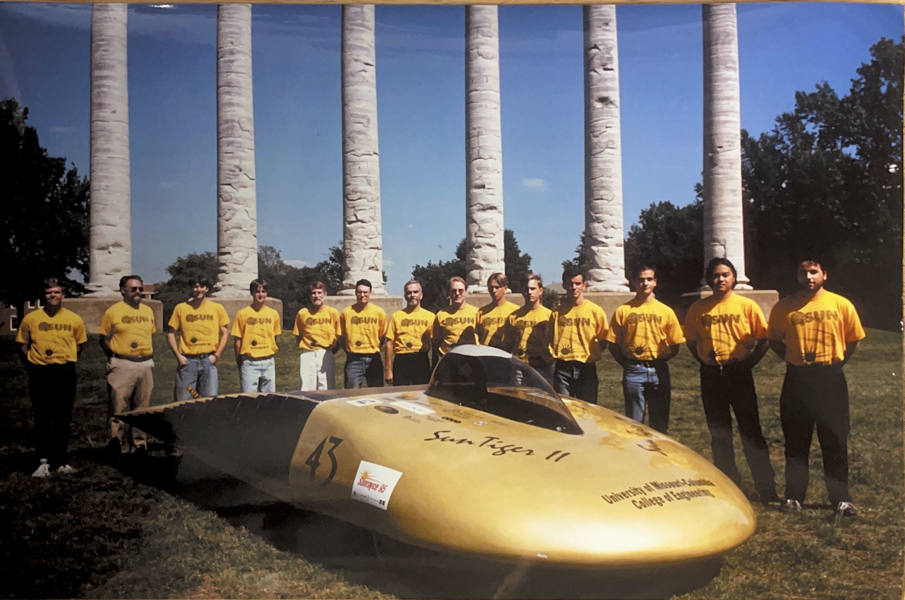

CAR #39
CAR #87

CAR #52

CAR #55
Mizzou Racing was established in 1985. We resided in the basement shop of Engineering Building West from 1998 until 2022
and saw generations of cars and Mizzou Racers come and go. In 2022, we moved into a new shop in Lafferre Hall with Mizzou
Electric Racing and began the joint manufacturing of Mizzou’s very first electric FSAE vehicle. Currently, we produce a
combustion car each year and have ranked in the Top 20 of Formula SAE for the last two years.
Mizzou Racing Alumni
have gone on to work at companies like Tesla, Honda, Garmin, SpaceX, Bosch, and Lucid. We have an extensive network of alumni
who have accomplished some amazing feats due to their time on Mizzou Racing.